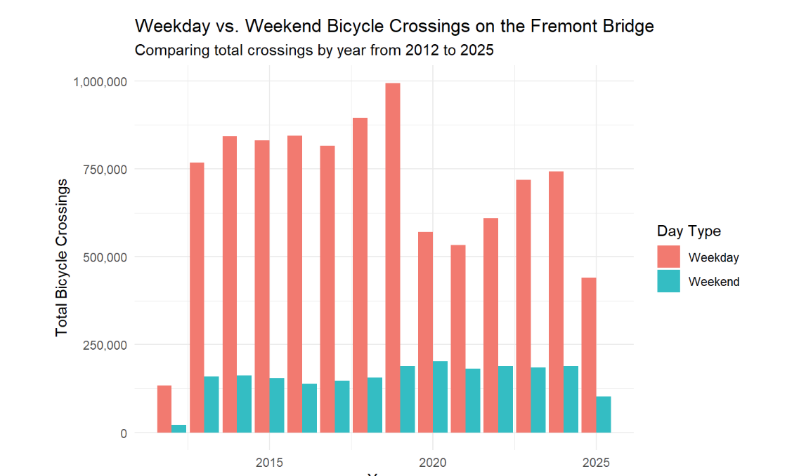

Bicycle Traffic Patterns on Seattle’s Fremont Bridge
Trends over time with weekday vs. weekend patterns using Seattle Open Data.


University of Washington
I primarily use R for data visualization and exploratory analysis, and I’m currently using Python more in my coursework to expand how I work with and visualize data. I’m especially interested in using visualization to make patterns and system behavior easier to see and understand.
UW: mbange@uw.edu
I use data to explain what’s happening, not just what we assume is happening. This portion of my work focuses on visualization and data storytelling, with an emphasis on clean analysis, readable visuals, and straightforward interpretation.
Trends over time with weekday vs. weekend patterns using Seattle Open Data.
I’m adding additional data reports using Python and pandas to show data processing and edge-case handling.